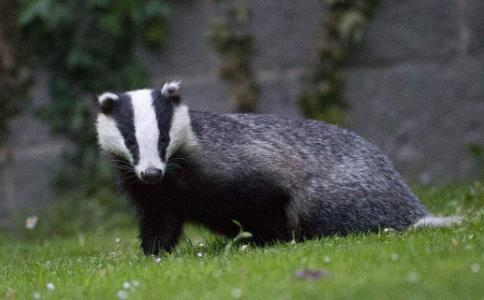

2009年的冬天来得似乎格外早，刚进11月，全国大部地区已普遍降雪，本地也迎来初冬第一场雪，气温骤降到零下几度，几乎没有感觉到秋天的过渡。而每年此时，那些传说中“浑身都是宝”的獾，也开始钻入洞穴，闭门不出，进入冬眠，直到来年三月才会出洞活动。
冬眠之前，整个秋季，它们都在四处奔波，大量进食，以增加体内脂肪，为冬眠期的体能消耗提供给养。獾的食性很杂，喜食植物根茎、
所谓“八斤獾七斤油”，此时仅獾油就能卖个好价钱，獾肉也比平时更受食客青睐，本地饭店收一只活獾价格大约500元，烹调好之后最少能卖到一千，广东等地售价更高。平时买下
獾，哺乳动物，嗅觉灵敏，毛色黑灰，体长约七八十公分，善掘土，喜群居，穴居山野，昼伏夜出，遍布于我国华东、华南、西南、华北及陕西、甘肃等地区，从平原到海拔3000多米的山地都有栖居。獾的
常见的獾有三种，猪獾、狗獾和狼獾，我们都曾经放过，其中猪獾放得最多。猪獾的吻鼻部狭长而圆，酷似猪鼻，但比猪鼻子小，感觉和“八戒”有点近亲，性凶力猛，叫声似猪，发怒时更会发出像杀猪般的嚎叫声。狗獾的性情要温顺很多，个头也小一点，鼻子是尖的，像狗鼻，所以叫狗獾。
獾的体形粗实肥大，四肢较短，耳壳短圆，眼睛很小，颈部粗短，四肢粗壮有力，趾端生有强而粗的长爪，趾甲很锋利，一般的小兽类，比如说狗，如果跟它单挑，估计都远远不是对手，但碰上几只猎狗围捕，单个的獾就很难逃脱了。
獾的背部从头到尾长有长而粗的针毛，黑棕色与白色混杂，体侧白毛较多。这种小兽还挺臭美，身上虽然脏乎乎，臭哄哄的，头上却长着三条白色纵毛，中间一条由鼻尖延伸到头顶，从两嘴角到头后还各有一道短白纹，整个脑袋看上去花里胡哨的，给人感觉好像非洲土著为了装饰或吓人而画在脸上的油彩。小样还学人整化妆！
狼獾主要
第一次放獾，放的就是狼獾！那次去本地农贸市场一家野味店买野鸡，却听见摊位铁架下面传来阵阵粗喘和低吼声，问老板啥玩意？他神秘兮兮地说：“獾，大狼獾！刚从东北发过来。”
在我们强烈要求下，他从摊位下拖出两个铁笼，这是我生平第一次见到獾。只见笼中趴着五只一米多长的野兽，棕色长毛，既像野猪，又像小棕熊！呲着满口獠牙，两只小眼四处打量，看上去很气恼的模样。问老板怎么卖的？他一口回绝，说这五只獾是某饭店特意从东北订购的，下午就来拉，客人还等着吃呢！
又问他獾落到饭店手里，会怎么炮制它们？
他说：“当然是先杀后吃了！要么用铁棍敲死，要么连笼子一起扔水里淹死，扒皮后红烧、清炖、黄焖……做法很多。虽然价格不低，却得预定，饭店一般都是为当官的和有钱人准备的。”
他一边说一边馋涎直流，我却心下恻然，大生不忍！于是与其商量能否卖给我们放生，游说半天，总算松口，但只给三只，另外两只必须留给饭店应付一下，否则他怕砸了自己的客户，多给钱也不行！这家伙还振振有词地说你是信佛的，总不能让我不讲信誉吧？
无奈之下，只花了近4000元带走三只。带走时另外两只都嗷嗷直叫，异常凄惨，很有点生离死别的样子。找来一辆皮卡车拉獾，老板倒心肠不坏，特意在笼子两侧用铁丝做了两个把手方便我们抬，又一再嘱咐千万别往笼里伸手，被獾咬着可不是闹着玩的。我仍有些些愤愤不平，说：“这么好心，干嘛不把五只獾都卖给我？”说罢驱车而去……
三只獾很快消失在密林之中，只剩一个铁笼还留在原地，一第一次放獾还真有点害怕，看着这些大家伙一边吼叫一边大力撞笼子，心里直打鼓！它们早就憋了一肚子怨气，放出来可别先朝我们下嘴，拿我们解恨！獾笼的小门是用铁丝拧紧的，松开铁丝时身子离得老远，随时做好撒丫子跑的准备，岂料它们一钻出笼，立即朝草深林密之处亡命逃窜，对我们根本没加理会。
阵风吹过，笼门还在不停摇摆，松了口气，有点兴奋又有点失落……
从此开始放獾，至今已放了几百只。尤其是太行山脉本来应该发往广东被杀被吃的獾，也都被转道发往山东，被我们放生。其间，趣事颇多，对这种野兽也越来越熟悉和喜欢，甚至还有了点佩服！
它们很有灵性，关在笼中时，大多数会低着头，将头深埋在两腿之间，一副完全绝望、听天由命的样子。獾也很可爱，有种所谓的“
獾身体的柔韧性很强，趾爪也很柔软灵巧，猎人捕获的獾都装在特制的铁笼里，长短粗细和一只獾的大小相仿，大概是怕空间太大，獾会撞笼而死。即使在这么狭小的空间内，獾也能闪转腾挪，做出一些令人目瞪口呆的高难度动作，甚至能用前爪抓住笼壁前滚后翻或左滚右翻，360度调转身体！放生前经常会先呆几分钟，观赏它们在笼中表演各种杂技，叹为观止！
獾很好斗，地域观念强，有的獾放出来刚跑出一段距离就先停下来撒尿，作标记占领地盘。有次同时放出几只，其中两只喘息未定，就在附近草丛中互相撕咬起来，战斗激烈，吼声震天。我怕引起别人注意，摸起一块土块扔将过去，两獾这才停止打斗，各自散去，也不知它们在争执些什么？
獾的体味很重，撒的尿更是腥臭难闻。有民间土方说用獾尿涂抹患处可治疗痔疮，想试用的人还是先看看獾尿是什么样子再说吧！还有种
另有一种制作獾油的说法：捉住獾后，将其活生生塞进一个瓷坛，封口密闭，埋入土中。两三年后，挖出开启，里面就只剩一坛獾油！也不知是真是假？但如想象一下，把制作之人装进坛中活活闷死的滋味，恐怕就没人忍心这样干了！人物一理，如此惨绝人寰的做法，希望仅仅只是一个传说！
獾身上往往带有一种大虱子，小圆球状，个头很大，不知是什么品种，獾笼中经常落下很多。看它们的大小，就知道吸起血来肯定厉害。有师兄放獾时，会出于好意将它们从獾身上拨下来，我一般都会阻止，因为虱子离开獾身体后必死无疑，全彼命而杀此命，智者所不为也！何况，獾们身上带着虱子，也照样活得有滋有味，生龙活虎，不会有什么影响。
獾善于挖洞，洞口一般有一到两个，多设在阳坡山势陡峭或茅草繁密之处。整个洞穴可长达几十米，獾很爱干净，据说洞里都收拾得很清洁，卧处还会铺上干草，小家整得怪舒服！民间传说，獾从山这头打洞进去，可以从山另一边打洞出来！
小马是个赶集的贩子，我们常从他手里买野物。有次他收了两只獾放在庭院里，笼口没太上紧，次日早晨起来一看，獾已破笼而出，不见踪影。院子四周有围墙且大门紧闭，估计它们也没逃远，就开始在院中四处搜寻。只见院子一个角落已被掏出四五个洞口，农村小院都是土地，院墙地基也浅，其中一个洞穿过院墙底部直通户外，出口已远在墙外几米之处，那只獾成功逃脱！
据说，獾能“凭直觉”辨认山的方向，而逃进山中。
另一只，前腿受伤，体力受限，就没那么幸运了，它打的洞选错了方向，竟向主人卧室纵深而去，也已深入地下近两米！小马用竹竿把它捅了出来，一顿臭揍，打个半死，重新关入笼中。不过，虽受了些皮肉之苦，最终也被我们买下放生了！
捕獾的方法有很多种，猎人的“邪慧”不一而足，对獾的伤害程度也不一样。被放生的獾有的周身完整，不见伤痕，有的却已严重受伤，前腿或后腿皮开肉绽，白骨外露，严重的筋骨已断，只剩一点皮肉相连，或者干脆没了一截！让人钦佩的是，这种小兽有着极强的生命力和求生欲望，即使受伤再重，只要给一丁点机会，它们也会连滚带爬，迅速逃生！
我曾经放过最“雷人”的獾，是一只猪獾，个头很大，前腿后腿各断一条，可能因为伤口太痛，关在笼里时不停用头撞笼，整个右脸撞得血肉模糊，右眼都撞没了，大概已存了必死之心！本来以为即使放了它也活不长久，哪知刚打开笼门，这家伙立即窜出，虽然一瘸一拐，方向也辨不大清，还是逃得虎虎生风，一看就知道必定能活得下去！
听一个老猎人说，獾的自愈能力很强，过一段时间，大多数獾的伤口都会自己愈合，而且它们记性很好，只要被人捕猎过一次，警惕性便会高出数倍，想再捉它就很难了。
老Z的生意很兴隆，仅活蝎一项每天走货量就在150斤左右。我们常去买他的蝎子放生，接触多了，就给他讲些
11月3日他打来电话说，从泰安发来9只獾，几个饭店早就等着要货，如果我要，一只给三百就行。我听后且喜且忧，本地目前活獾市场价格一只大约五百左右，他给的价钱倒是很公道，但前一阵放生太频繁，现下手头吃紧，其他
下午两点和另外两位居士赶到市场，老Z一见到我满脸沮丧，双手一摊说：“你来晚了，昨天连獾加我的野鸡、野鸭都让林业局给扣走了！”开始，我还以为他将獾高价卖给了饭店，以此理由敷衍我，过会老Z拿出扣留清单让我过目，这才相信，心中大喜！观世音
眼见老Z神色懊恼，也没敢喜形于色，将所有钱买了蝎子准备走人。老张却黏黏糊糊不让走，欲言又止，问他什么事？他说，獾是因为给我留着才被林业局扣走的，能不能给他点钱补偿？见他说话吞吞吐吐，我才恍然大悟，原来这家伙怀疑是我把他给举报了！
想想也难怪，昨天我说过来买獾却没来，偏偏下午林业局就来人查扣，如此巧合，任谁也会疑心是我在背后点的炮！想明此节，也不说破，只说獾没给我却让我掏钱，哪有这种道理？拿起蝎子，掉头而去。此事确实不是我举报的，大丈夫胸怀坦荡，也不必过多辩解！老Z却兀自站在原地张望，不肯进屋……
当时还没看报纸，走到半路，心里又不太踏实，林业局虽然扣走了獾，但会怎么处理呢？如不及时放生，它们还是死路一条，又或者老Z托了熟人，交点罚款后再把獾要回来怎么办？
马上掏出手机，打给林业局分管林业执法的领导，该领导回答得很干脆，执法人员在查扣的当天下午就和各媒体记者一道将所有野生动物放生了，详情见当天《鲁中晨报》新闻版！这才松一口气，放下心来。买来报纸一看，新闻中还配有放生现场的照片，正文下面有一行小字：“请提供线索者L先生携带身份证到鲁中晨报领取奖金50元”。巧合的是，举报人竟然跟我同姓，难怪老Z怀疑了！
这些杀生为业的业户，多很粗野，如是怀疑别人，见面之后恐怕早已恶言以对甚至拔拳相向了，但对我倒还不敢如此。其实老Z怀疑我，也并非完全冤枉！
早在2009年四月份，“拔众生苦放生会”就向本地分管野生动物保护的林业部门递交了一份报告，详细汇报了本市及周边地区野生动物被大量捕杀、贩卖、食用，已形成产、供、销一条龙的严重现状，并列举了这种行为带来的巨大危害：
一是违反《野生动物保
二是所有野生动物均未经检疫便直接进入饭店和
林业局有关领导对报告很重视，与我们进行了详细探讨。最后达成的共识是：从源头治理难度很大，因为捕猎人员构成十分复杂，多为农村无业或社会闲散人员，很难管理。他们下网、夹、套等捕猎工具的位置也多在深山密林之中，很难确定。即使对其采取措施也不过是没收工具等，如果没有公安配合，力度远远不够，往往是屡打屡犯，屡禁不止。而终端的饭馆、酒店，因为各种错综复杂的原因，也很难治理，所以打击重点应放在中间的收购、贩卖环节！
野生动物被捕猎后，主要有两个流向：一是被大的商贩收购集中后，再发往广东等地，售价较高，获利颇丰。二是通过农村大集、农贸市场流向本地饭店、家庭。济南某肉联厂，更是长期大量收购斑鸠等各种野鸟，杀死去毛后冷冻起来，囤积售卖。
林业局领导表示，以后将加大对中间环节的治理力度，对这条产业链拦腰一击，两端自然会逐渐萎缩。之后林业部门连续采取了几次行动：一次从车站拦截查扣了近万只发往外地的野鸟，全部放生；另一次端掉了一个批量捕捉残杀青蛙，生产青蛙肉的窝点，还有这次查扣放生獾和野鸡等。尽管解救的动物与被杀吃的物命相比仅仅是九牛一毛，但也起到了一定震慑作用。在此再次向林业执法人员致敬，保护物命，功德无量！
曾有师兄提议，以后和林业部门配合行动，发现售卖野生动物的情况就立刻举报查处。为便于执法人员取证，甚至可以伪装成买主和商贩们洽谈，等交易时再通知执法人员将他们人赃并获。乍一听，似乎计策不错，但实际操作起来并不可行。
以“秋月野味大全”的老Z为例，如果这次他确定是我举报的，就会出现以下三种后果：
一、他以后不再卖野物，则被捕猎的獾等就会流向其他地市，其他商贩。
二、他受打击后加强了戒备，进货后就藏在隐蔽地点或者直接送往饭店。
三、做这行的商贩都互通声气，他会通知其他同行也不再将活物卖给我们。
三种后果都会导致这些物命完全丧失被救机会，在劫难逃！
现实生活中，群众自发举报贩卖野生动物的情况为数极少，多数举报，其实是商贩之间互相竞争，互相拆台的结果，要更好打击这种违法行为，主要还得靠林业部门增强责任心，加大日常巡查和突击检查力度！
两天之后，“秋月野味大全”老Z又打来电话，说山区老家那边村民又捉了7只獾，问我要不要？我说：“你还真是顶风而上，越挫越勇啊？这么相信我，不怕我举报吗？”他说：“现在收的野物，都藏得很严，林业局绝对查不到！而且我找熟人打听了，举报的人不是你！以后有活物还是想便宜卖给你，我也能做点功德，谁也不是天生就愿意杀生害命的！这年头，不相信
我说：“嗯，被罚了一次有进步，看来獾价还能再便宜点喽？”这家伙却一口回绝：“这价格你随便打听去，就加了一点运费，真不挣你钱。”
于是联系喜欢放鳖的潘师兄，他从未见过獾，觉得挺新奇，欣然同意一起放，并出大部分放生款。11月8日下午，一行几人驱车数十公里进入一座深山，将獾笼抬下车，一见到杂草树木，闻到大山的气味，所有獾都兴奋起来，在笼里上蹿下跳，有几只笼门刚打开一点就硬挤出来，向草深之处落荒而逃，一会就不见了踪影！相信它们重归山林后也一定会小心谨慎，远离夹网，低调做獾，平平安安，长命百岁！
老潘此次专门带家人一起来放獾，对这些体态胖胖乎乎，跑起来一拱一拱，气急败坏、亡命逃窜的野兽大感兴趣，听说才三百块钱一只，连说便宜，他放一只稍大点的鳖也是这个价！却哪里有獾这么好玩？也不知早已逃走的獾们，会不会一样觉得好玩？
捕猎、贩卖、食啖野生动物者俱当引以为戒，即刻断除，否则果报来时，悔之晚矣！
獾，一直被夸大成是“全身都是宝”的动物，这也注定了它们被大量捕杀的
不由叹息一声，多么无辜的獾！